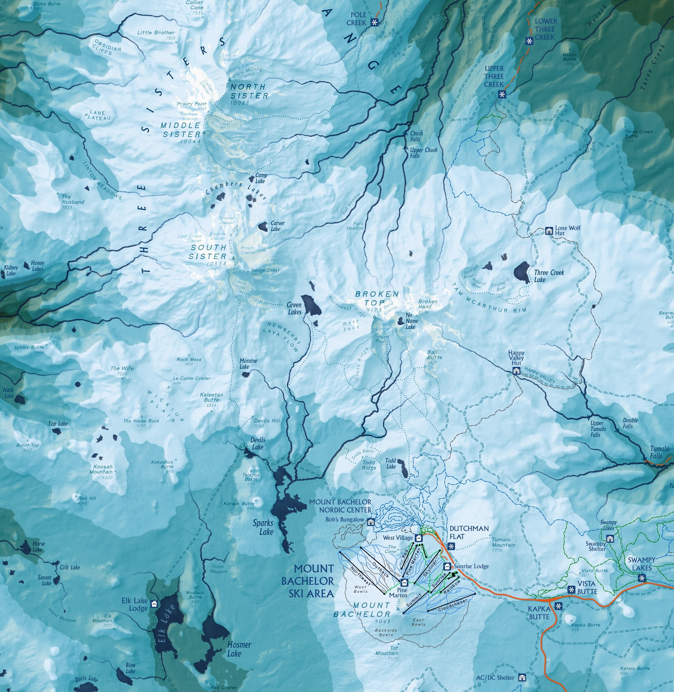
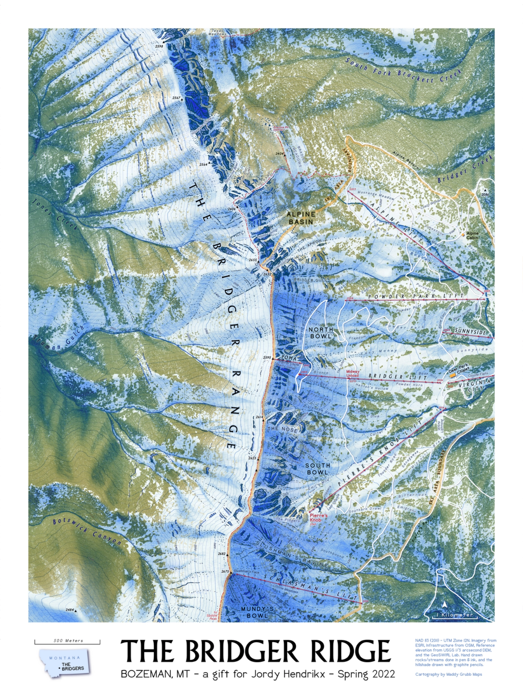
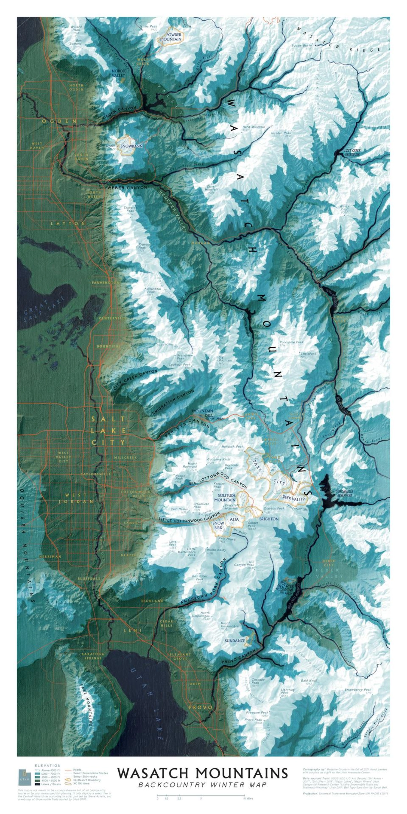
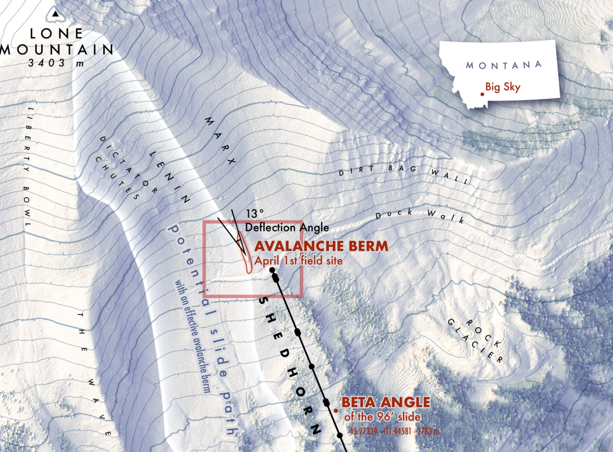

My approach to ski and snow mapping is shaped by an education background in snow dynamics and avalanche science, three summers of fieldwork on ice in Grand Teton National Park, 7+ years of backcountry experience, and 20+ years of ski experience.
I design functional ski and mountain maps that work as backcountry navigation guides, trail maps, mountain overviews, and navigation tools: built for clarity, safety, and real-world skiier use.

more updates to come soon as I continue to work on ski maps for guidebooks, ski resorts, backcountry recreation and safety...